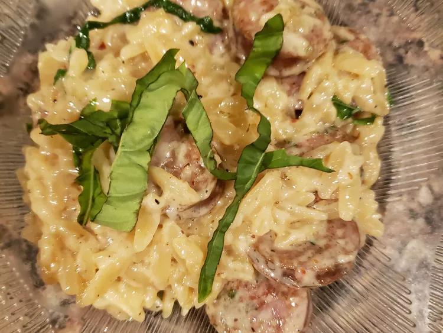

Creamy Chicken Sausage Orzo Skillet
This creamy chicken sausage orzo skillet is a one pot-and-done comfort food dish. It can easily be doubled, and you can use any chicken sausage you like. It is delicious!

Ingredients
- 1 1/2 teaspoons olive oil or avocado oil
- 4 Italian-flavored chicken sausages, sliced into rounds
- 2 teaspoons garlic paste
- 4 ounces orzo pasta
- 1 cup chicken broth
- 1 cup heavy cream, or as needed
- 1 teaspoon salt
- 1 teaspoon freshly ground black peper
- 1 teaspoon garlic powder
- 1 teaspoon onion powder
- 1 teaspoon red chili flakes(optional)
- 4 large basil leaves, hredded
- 1/4 cup freshly grated Parmesan cheese
Directions
- Heat a heavy bottom pot over medium-low heat and drizzle in oil. Fry chicken sausage rounds until browned and cooked through, about 5 minutes. Add garlic and cook for 1 minute.
- Add orzo and cook and stir until lightly golden brown, about 1 minute. Pour in chicken broth and 1/2 cup cream. Stir in salt, pepper, garlic powder, onion powder, and chili flakes.
- Bring mixture to a boil, then cover and reduce heat to a simmer. Simmer until orzo is very tender, about 10 minutes. Check occasionally; add additional cream as needed if orzo becomes too dry before it is tender.
- Lower heat to low, then stir in basil and Parmesan until fully incorporated. Serve and Enjoy!
More Recipes below: